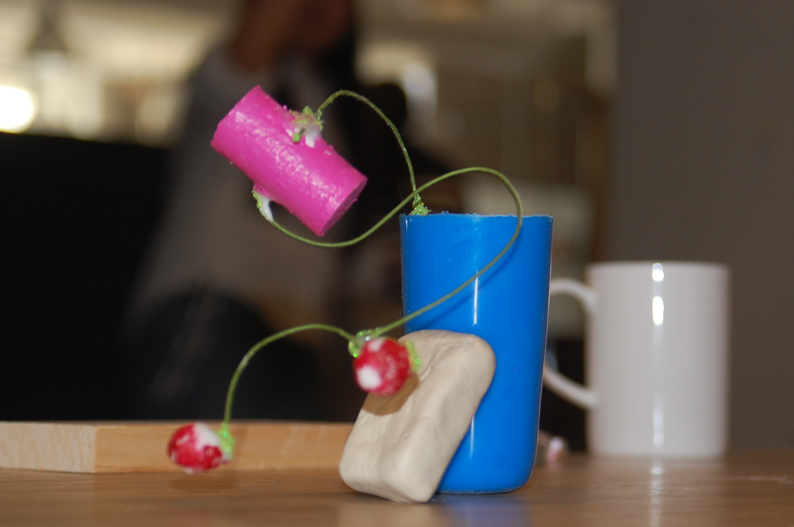
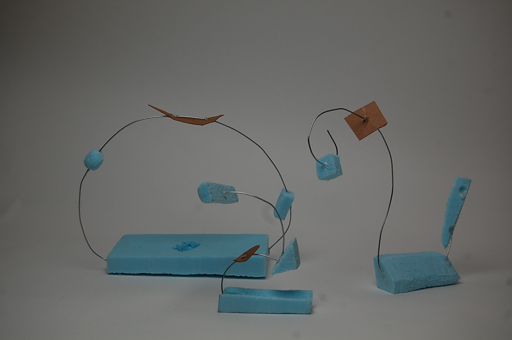
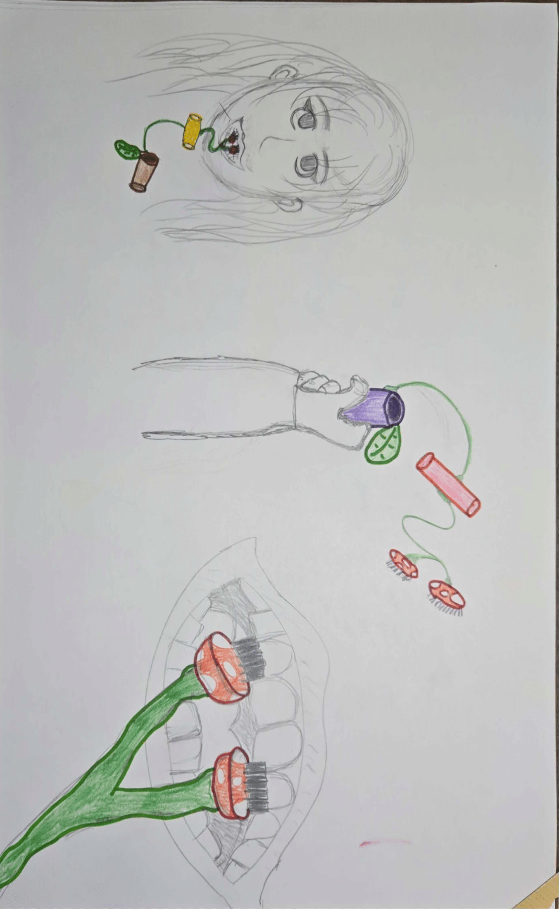

Cassini Interactive Poster
Cassini Interactive Poster
Cool Dogs: The Series

Tamagotchi Prototype
The Mushroom Toothbrush

Figma
Cassini Interactive Poster
Role: Graphic and Interaction Designer
A fully interactive infographic poster about the Cassini-Hyugens Spacecraft. Included in the Figma file are sketches, interactions of a flat poster, a final flat poster, and all of the progress for the interaction. It was a two-part project illustrating how interaction can hide information and make intaking information more manageable by the user.
Gen Z learners prefer aural, visual, and kinesthetic learning as they seek and engage with online resources such as virtual simulations and YouTube. - Science Direct
I started with competitve analysis' of other space infographic posters and specifically ones that covered spacecrafts. Then came the pencil sketching process and creating my flat posters. Once I had my final flat poster, I moved on to creatng the interactive web prototype.

Fabric, LED Lights
Cool Dogs: The Series
Role: Product Designer and Producer

Are you a young adult?
Have you found yourself feeling lonely?
If you answered yes to any of the questions above.. COOL DOG(S) is the perfect companion for you!

Cool Dog(s) is a unique and heartwarming blind box plushie experience that blends the excitement of mystery with the joy of companionship. Created for young adults seeking a sense of comfort and connection, Cool Dog(s) brings together the charm of adorable plush toys with a playful, interactive twist.

The idea of COOL DOG(S) was born from the need that young adults have for companionship, and my own love for trinkets and cute plush.


The user would purchase a Blind Box (A blind box is a sealed package that contains a random item, making the contents a mystery until opened. Blind boxes are a popular way to collect toys, and they can add an element of surprise and excitement to the unboxing experience. ) in order to get 1 of 5 DOGS. Each dog comes with a different light up body part and accessory.

Figma
Modern Tamagotchi
Role: Product Designer and Producer
This is a fully interactive experience, prototyped in Figma, optimized for an iPod-like device. The app captures the nostalgic charm of the original Tamagotchi while utilizing modern interface design principles to enhance the user experience. The prototype showcases a seamless user interface with clean, minimalistic icons and intuitive navigation.
"I work from home so it's nice to be able to pause a stressful interaction to take 5 minutes to check on my little guys." - Tamagotchi User
This Tamagotchi includes a Guinea Pig character, inapired by the everyday activities guinea pig owners have to do.

The Tamagotchi shell is stated by many users as why they are so attracted to the device. I wanted to reinvoke those feelings and use a nostalgic shell design, like a T.V or iPod.

After some user testing, the shell was simplified into a shape resembling the orgininal iPod from Apple. It's simple controls and iconic shape is perfect for a modern Tamagotchi.
Silicone, Resin, Wire
Toothbrush Redesign
Role: Product Designer
The MushBrush!
The Mushbrush is an innovative fusion of art and functionality, born from a 3D physical art project that explores the fluid beauty of nature through wire sculptures. Initially crafted as an abstract exploration of organic forms, the wire sculptures were meticulously designed to mirror the natural shapes and flowing lines found in the world around us. These intricate designs were then reimagined into a functional product – a toothbrush that not only enhances your daily routine but also elevates the aesthetic of your bathroom.
This product was a reinvention of a classical item, using three dimensional product design concepts such as forms, curves, planes and combing them into one cohesive sculpture. It began with the grouping of three sculptures, and then one was chosen and polished.


The common toothbrush has become an eyesore in the bathroom, with many people choosing to hide them or look for more aesthetic alternatives. The MushBrush is designed after patterns found in nature, to bring seamless beauty to the bathroom.
